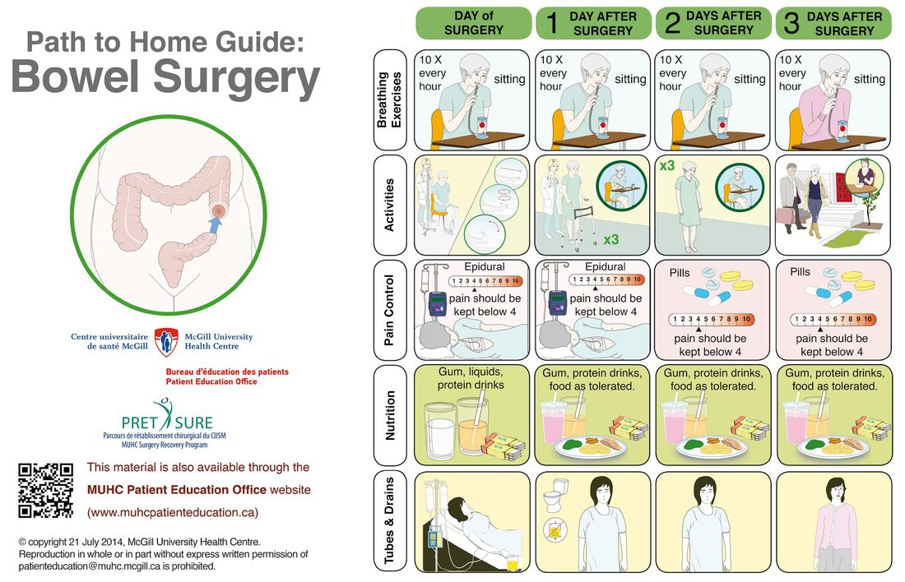

Day Case Surgery and Enhanced Recovery
Summary
- Two related reforms have reshaped elective surgery: doing more of it without an overnight stay, and doing the rest in a way that shortens the stay that remains. Reductions in length of hospital stay after surgery of 30 to 50% are common with enhanced recovery protocols, with associated savings in healthcare costs [1].
- Day case surgery pursues the same end by a different route (planned same-day admission and discharge) and its gains are reduced hospital stay, less hospital-acquired infection, lower costs, better patient experience and greater service efficiency [2].
- Both rest on the same insight: much of what delays recovery is the perioperative care itself, not the operation.
Definition
Day case surgery is the planned day admission of a patient to hospital for a surgical procedure, after which there is successful and safe discharge back home on the same day [2].
Enhanced recovery after surgery (ERAS) aims to minimise perioperative physiological derangement and the stress response to surgery, optimise the speed of recovery and reduce complication rates [3]. It is usually applied to otherwise healthy individuals who do not need particular preoperative correction [3].
Bailey & Love frames ERAS as a consequence of understanding the metabolic response: modern understanding of the response to surgical injury and its mediators has led to a complete reappraisal of traditional perioperative care [1].
Pathophysiology
ERAS is evidence based on the scientific rationale for avoiding three things: unmodulated exposure to stress, prolonged fasting, and excessive administration of intravenous saline [1]. It depends on a multimodal approach in which the combined effects of several interventions achieve significant benefit, no single component carries the result [1].
Minimal access surgery is the key change in practice, reducing the magnitude of surgical injury and enhancing the rate of return to homeostasis [1]. Laparoscopic and other minimally invasive techniques reduce the metabolic response, aid early mobilisation, and reduce gastrointestinal tract exposure in abdominal surgery [3].
- Modulating the stress response at the time of surgery may have long-term sequelae over months or longer [1].
- Two examples are given.
- Beta-blockers are associated with improved short- and long-term survival after major surgery, perhaps by modulating the hyperadrenergic state induced by surgical stress [1].
- And in open surgery, epidural analgesia reduces pain, blocks the cortisol stress response and attenuates postoperative insulin resistance, which via effects on the body's protein economy may favourably affect many patient-centred outcomes [1].
Clinical features
Not every patient is a candidate. ERAS-type protocols are as effective in the elderly as in the young, but they are not suitable for some insulin-dependent diabetics, patients with pre-existing significant nutritional compromise, or patients with cognitive impairment [3].
Patient selection for day surgery should be based on comorbidity, not on arbitrary limits such as ASA grade, age or BMI [2]. It requires thorough preoperative assessment, and patient awareness and education in the principles of day surgery to improve the experience [2].
Social factors carry equal weight to clinical ones. There must be support at home after discharge (a responsible adult to take the patient home and provide support for 24 hours) and a suitable home environment for recovery [2].
Etiology
The four groups of factors determining whether a procedure can be done as a day case are surgical, anaesthetic, patient and social [2].
Surgical factors: procedures with a low incidence of major complications; short procedures, ideally under 2 hours; no significant impairment of oral intake or mobilisation; and consultant or consultant-supervised operating lists to improve efficiency [2].
Anaesthetic factors: procedures with a predictable postoperative recovery course, avoidance of opioid analgesics, and local and regional block options [2].
Diagnosis
Day case admissions are pre-planned with full preoperative clinical assessment, and differ from inpatient admissions in being far more amenable to streamlining with protocols and patient journey pathways [2].
Running day surgery from inpatient wards did not work. Nursing staff had to devote more time to acutely unwell patients, so there was little incentive to push for same-day discharge [2].
Thresholds and severity
- The UK targets have moved upwards in steps.
- The Royal College of Surgeons of England's 1985 guidelines recommended that 50% of all elective surgical procedures be performed as day cases, at a time when only 15% were [2].
- At the turn of the millennium only 68% of elective operations were done as day cases nationally, and the NHS Modernisation Agency recommended a target of 75% in 2001 [2].
The descriptor has since changed from "day case" to length of stay. The BADS Directory of Procedures describes day case operations as zero-night stay procedures, extended to one-night stay and two-night stay for procedures where patients should be discharged within 48 and 72 hours respectively, covering operations that need longer recovery [2].
- UK day surgery has a documented lineage, and the milestones are examinable.
- The concept originates with James Nicoll, a Glaswegian surgeon who in 1909 reported a large series of children all discharged on the same calendar day as their operations [2].
- In 1955 Eric Farquharson, an Edinburgh surgeon, published a similar experience with 458 consecutive open inguinal hernia repairs as day cases [2]. The first UK day unit opened at Hammersmith Hospital in 1969, established by Professor James Calnan [2].
The British Association of Day Surgery (BADS) was formed in 1989, chaired initially by Professor Paul Jarrett with a council of anaesthetists and senior nurses [2]. Its aims are to encourage the expansion of day surgery, promote education and high-quality treatment, conduct and publish research, organise meetings and conferences, advise on the construction and management of day units, maintain high standards of surgical, anaesthetic and nursing care, and maintain a day surgery reference library [2].
The Audit Commission's 1990 recommendations included a "basket" of 20 surgical procedures deemed suitable for day surgery, expanded to 25 in 2001 following consensus with BADS, and audited across UK hospitals to establish day surgery performance [2]. The 25 are: orchidopexy; circumcision; inguinal hernia repair; excision of breast lump; anal fissure dilatation or excision; haemorrhoidectomy; laparoscopic cholecystectomy; varicose vein stripping or ligation; transurethral resection of bladder tumour; excision of Dupuytren's contracture; carpal tunnel decompression; excision of ganglion; arthroscopy; bunion operations; removal of metalware; extraction of cataract with or without implant; correction of squint; myringotomy; tonsillectomy; submucous resection; reduction of nasal fracture; operation for bat ears; dilatation and curettage or hysteroscopy; laparoscopy; and termination of pregnancy [2].
In 2006 BADS produced the Directory of Procedures, which was not limited to the basket of 25 in assessing hospital performance; it spans multiple surgical subspecialties and contains over 200 procedures in its sixth edition of 2020 [2].
Treatment and Management
The ERAS bundle
- Nutrition.
- Preoperative carbohydrate loading, often as oral solutions over the 24 hours before surgery including up to 4 hours before anaesthesia, is thought to reduce the early catabolic response to major surgery [3].
- Full nutrition is reintroduced early: carbohydrate-rich fluids from 6 hours after surgery, and nutritional supplements and light diet components from 48 hours, to encourage immediate return of gastrointestinal function [3].
- Anaesthetic technique.
- Avoid opiates, including in patient-controlled analgesia and epidurals, to prevent the reduction in gut motility and the nausea associated with them [3].
- Avoid epidurals, to improve early mobilisation and reduce the cardiovascular and gastrointestinal effects of autonomic spinal blockade [3].
- Use regional local anaesthetic techniques instead (transversus abdominis plane block, regional infiltration, or infusional catheters) to minimise central nociceptor input, which may otherwise enhance the systemic stress response [3].
Surgical technique. Laparoscopic or other minimally invasive approaches, and avoidance of bowel preparation for abdominal surgery, which reduces fluid and electrolyte imbalance and disruption of gut flora and is associated with fewer gastrointestinal complications such as anastomotic leakage [3].
Physiotherapy. Early mobilisation with specific exercises (sitting out within 12 hours of surgery, walking within 48 hours) plus perioperative respiratory exercises [3].
Nursing. Intensive patient preparation with preoperative education on what to expect, and intensive perioperative and postoperative input encouraging early re-establishment of diet, mobilisation and self-care [3].

Analgesia in the laparoscopic era
- Epidural analgesia is no longer recommended for laparoscopic surgery, because of the reduction in wound size and tissue trauma [1].
- Patient-controlled analgesia is usually sufficient and avoids the fluid shifts and hypotension seen with epidurals [1].
- Suggested adjuncts are one-shot spinal diamorphine and a 6 to 12 hour infusion of intravenous lidocaine, which are opiate sparing, improve gut function and enhance overall recovery [1].
Bailey & Love summarises the proactive ERAS approach in four items: minimal access techniques; blockade of afferent painful stimuli by epidural, spinal or wound catheters; minimal periods of starvation; and early mobilisation [1].
Procedural interventions
The day surgery pathway
The pathway runs in eight steps: the patient is listed for a day case procedure from outpatient clinic; nurse-led preoperative assessment, often the same day as clinic; a high-risk anaesthesia clinic if the patient is deemed high risk, and if they are unsuitable for the day surgical unit, exploring inpatient admission, local or regional anaesthesia, or cancellation; the patient is given an operation date with specific preoperative instructions; protocol preoperative checks on the day of admission; the operation in the day surgical unit theatre; discharge with appropriate analgesia and postoperative instructions; and follow-up in clinic or by telephone if required [2].
There is room for innovation in the pathway itself, a recent example being GPs fast-tracking referrals directly to preoperative assessment clinics, eliminating a step [2].
The day surgical unit
Dedicated day wards and self-contained units separate from the main hospital building led to significant improvements in same-day discharge [2]. The model works best with its own dedicated theatre suites and recovery wards, day surgery care-trained nursing staff, and patient facilities such as parking and a waiting area [2].
The most functional units are those ring-fenced against the emergency pressures of the main hospital, and opening times should be at least 7 a.m. to 8 p.m. to maximise the service [2]. Most UK trusts now have such a unit [2].
Every unit requires a Clinical Lead with a subspecialty interest in day surgery, usually an anaesthetist or a surgeon, with protected time in their job plan, responsible for developing local guidelines, pathways and clinical governance within the unit [2].
Complications
The complications ERAS and day surgery are designed to avoid are those of the perioperative process rather than of the operation: the reduction in gut motility and nausea from opiates, the cardiovascular and gastrointestinal effects of autonomic spinal blockade from epidurals, the fluid shifts and hypotension seen with epidurals, and the fluid and electrolyte imbalance and disrupted gut flora that follow bowel preparation [1][3].
Day surgery reduces hospital-acquired infection simply by shortening exposure [2].
The failure mode of day surgery is the unplanned overnight stay, which is why patient selection, the responsible adult at home for 24 hours, and the suitable home environment are treated as clinical criteria rather than administrative ones [2].
Outcomes
ERAS protocols commonly reduce postoperative length of stay by 30 to 50%, with associated savings in healthcare costs, and ERAS principles are now applied by protocol to many types of major surgery with considerable benefit in outcomes [1].
Day surgery's stated benefits are reduced hospital stay, reduced hospital-acquired infection, reduced healthcare-related costs, improved patient experience and improved service efficiency [2].
Neither works as a document. Successful day surgery is described as dependent on motivated patients, an effective pathway and enthusiastic day surgery staff [2]; ERAS is described as intensive and demanding, and as depending on the combined effect of several interventions rather than any one of them [1][3].
References
- Bailey & Love's Short Practice of Surgery, 28th ed., Ch. 1 Metabolic response to injury
- Oxford Handbook of Clinical Surgery, 5th ed., Ch. 25 Day case surgery
- Oxford Handbook of Clinical Surgery, 5th ed., Ch. 2 Principles of surgery
- Sabiston Textbook of Surgery, 22nd ed., Ch. 11 Advances and Training Considerations in Laparoscopic Surgery